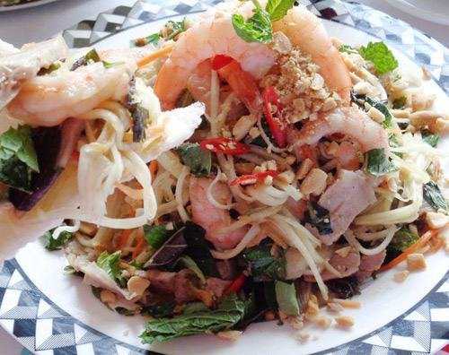

Cùng bắt tay làm thử thôi nào!
Nguyên liệu:
- 200gr đu đủ xanh bào sợi
- 1 miếng thịt heo ba chỉ
- 100gr tôm
- 1/4 muỗng cà phê tiêu
- 1 trái ớt thái lát
- 1 muỗng cà phê tỏi băm nhuyễn
- Rau ăn kèm: rau húng quế, rau bạc hà, rau ngỏ thái rối
- Hành pha
- Pha nước mắm: 1 muỗng canh nước cốt chanh + 1,5 muỗng canh nước mắm + 1 muỗng canh xì dầu + 1,5 muỗng canh đường + 3 muỗng canh nước hoà tan cùng với ớt tỏi băm trong 1 bát. Bạn có thể bào thêm cà rốt nếu thích.
Thực hiện:
Bước 1: Thịt heo ba chỉ luộc chín thái lát mỏng. Tôm luộc chín chẻ đôi nếu tôm to.
Bước 2: Đu đủ bào, cà rốt bào (nếu có ), tôm, thịt cho hết vào âu to, trộn đều. Sau đó cho 1/2 chén nước mắm vào trộn chung.
Bước 3: Cuối cùng cho tiêu, ớt, tỏi băm và các loại rau vào trộn sơ. Nêm nếm vừa miệng là bạn đã hoàn thành xong.
Cho gỏi đu đủ tôm thịt ra dĩa, trang trí lá bạc hà và rắc đậu phụng.
Món gỏi đu đủ tôm thịt tuy làm đơn giản nhưng rất ngon miệng bạn nhé.